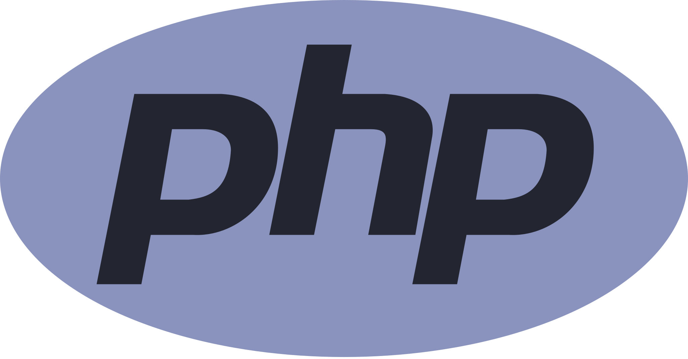

Un lenguaje de programación es un lenguaje formal (o artificial, es decir, un lenguaje con reglas gramaticales bien definidas) que le proporciona a una persona, en este caso el programador, la capacidad de escribir (o programar) una serie de instrucciones o secuencias de órdenes en forma de algoritmos con el fin de controlar el comportamiento físico o lógico de un sistema informático, de manera que se puedan obtener diversas clases de datos o ejecutar determinadas tareas. A todo este conjunto de órdenes escritas mediante un lenguaje de programación se le denomina programa informático.
Se trata de un lenguaje de programación muy versátil de código abierto, muy utilizado actualmente para inteligencia artificial y el Big Data. El lenguaje es sencillo, fácilmente legible y elegante, disponiendo de una curva de aprendizaje muy corta en comparación con otros tipos de lenguaje.
Python además se puede utilizar en prácticamente cualquier sistema operativo actual.

Java es un lenguaje de programación orientado a objetos que destaca por ser multiplataforma. El código de Java tiene la gran ventaja de que puede ser ejecutado en cualquier dispositivo. Java es uno de los lenguajes más utilizados actualmente gracias al uso que se hace de distintas plataformas (smartphones, ordenadores y tablets, principalmente).

PHP es un lenguaje de programación de código abierto, enfocado para el desarrollo web. Entre las muchas cosas que pueden realizarse con PHP destacan la creación de web dinámicas al poderse incrustar su código dentro de HTML y su uso como scripts del lado del servidor.
Es un lenguaje de programación interpretado, muy utilizado en la programación web del lado del cliente. Además de ser muy práctico, es capaz de ser ejecutado en cualquier navegador, por lo que es el lenguaje más utilizado en la web. Javascript es multiplataforma, está orientado a objetos y eventos, y es interpretado; es decir, no necesita compilarse.

El lenguaje C y su extensión C++ aún siguen siendo de los lenguajes más utilizados en la actualidad. Lo eligen los informáticos cuando se necesita una programación potente que incluso necesite bajar a programar algunas tareas en ensamblador. A pesar de tener una curva de aprendizaje alta, sigue siendo muy solicitado en la programación en general y en la de videojuegos en particular.